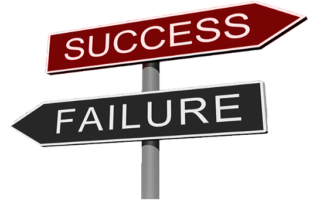

Ok, what on earth is A/B testing?
A/B testing is a pretty common technique nowadays in digital marketing, consisting in carrying out two different actions and comparing their results. For example, these results could be the conversion rate of a marketing campaign or the Click Through Rate. It is also widely used beyond marketing, tipically in areas such as pharmacology or psychology.
Let’s suppose we want to boost sales of a product or service and to do this we decide to create a new web design. We will carry out an experiment called A/B test and will be able to measure the influence of our changes. For that purpose we will split randomly our users in two groups: control group, which will see the web as it is now, and the experimental group, which will be shown the new design. Once finished the test, we will analyze both results to find out which web design led to best performance.
The key concept to remember here is that when doing such a test over a sample instead using the whole population, any metric we may study have associated some uncertainty that have to be taken into account when interpreting the results. In our case, for every user visiting our website, we can only get two different outcomes: client buys or not, client leaves the company or not…that is, success or failure. A random variable like this is said to follow a binomial distribution.

Types of errors
To properly design the experiment first we need to understand the difference between the two kind of errors we can incur when evaluating the results of the test. Let’s suppose we have already carried out the test and collected the data. For each proposed design we measured certain conversion rate.
One possibility is that the difference we found may have come up simply by chance: Let’s say, in fact, the new design does not bring anything new and it does not boost sales, but we have been “lucky” when distributing the potential clients in groups (remember this was a random process) and by pure chance we got more sales among the customers that saw the new website. This is known as a type I error (normally called \(\alpha\)). It is the probability of hallucinate, and believe our variante works best when actually it does not.
On the other hand, when designing an A/B test we also have to take into account we could make another kind of error. Let’s imagine the marketing team proposes a design that actually works (and when I say it works I mean that if I had a crystal ball I would find out it really works. To put it less flamboyantly: If we could make millions of visitors in our website we would conclude with no doubts that our new design boosts sales). However, as we can’t wait for so long to get the results, we will have to conclude based only on the results of a sample. But as in every sample, in some way the results we get depend on randomness, to how “lucky” we are when choosing the people in every group. This implies that, when evaluating the results we could end up having exactly the same conversion rate with both websites.
Then, the million-dollar question: Are these results significant? Then, the new design has absolutely no effect? Or, analogously to the previous case, could it be that we had “bad luck” when splitting the groups and thus we are not seeing the effects of the new design? This is known as type II error (\(\beta\)): the probability of not getting significant results when actually there is a difference between the conversion rates of each group.

Image from Clearswift
The statistics
Technically speaking, in statistical inference we call hypothesis testing to the procedure followed to evaluate if a property of a population is compatible with the measurement from a sample.
We define the null hypothesis \(H_0\) as the default hypothesis we want to challenge, the one we will keep if we can’t collect evidence against it. As opposed, we usually define implicitly the alternative hypothesis as “\(H_0\) is false”.
- The significance level or \(\alpha\) level is the probability of rejecting the null hypothesis when it is true. 95% of significance means that, if we repeated the experiment many times, 95% of the times we obtain significance results it will be because indeed the variant conversion rate beats the control conversion rate, and only in 5% of the cases we will get a significant false positive
- \(\beta\) is the probability of not rejecting the null hypothesis when it is false. It is common to talk about statistical power (defined as 1 - \(\beta\)), which is the probability of rejecting the null hypothesis when it is false. For example, planning an experiment to have 80% power implies that, if we repeat the test several times with a variant that indeed beats the conversion rate, we will obtain significant results 80% of the times. It’s the power of the lens, our capacity to accurately distinguish the difference between the conversion rates of both groups.
Taking all above into account, it is easy to see that when evaluating the results of the test we may stumble upon four different cases:
- True positive: Results point out the success of the variant and actually, if we could carry out the test with the whole population we would see that the new design indeed boosts the conversion rate.
- True negative: Results point out the variant doesn’t improves the control version and indeed it does not.
- False positive (type I error): Results point out the variant has been a success, but actually this result is due to chance.
- False negative (type II error): Results point out the variant does not improves the control version but actually it does but we haven’t collected enough data.

Image from Wikipedia
What about sample size?
What role does it play the sample size in a A/B test? The more sample, the less uncertainty.
We can calculate the uncertainty associated with an statistic with the next formula:
\[ \hat{p} \pm z \sqrt{\frac{\hat{p}(1-\hat{p})}{n}} \]
being \(\hat{p}\) the observed rate, z the Z-Score and n the sample size. The Z-score of a measurement tell us where it is located in the distribution, that is, how far in standard deviations is that measurement from the average.
A common question when designing an A/B test is: how big my sample size should be?
To answer this question we can use the R function power.prop.test which takes as arguments sample size, conversion rates of our groups, significance level and power: We set four of them to get the fifth one. So this is the perfect tool to design an A/B test: we can find out the required sample size to observe certain effects under a given error tolerance, or find out the statistical power of the test given conversion rates and sample sizes.
Through this tool we arrive to another important concept: MDE is the Minimum Detectable Effect we can find significant under certain significance assumptions and sample size. This term leads to another implicit idea: To be able to distinguish small effects we must have enough sample data, otherwise it’s easy to fail in a type II error (the difference exists but we are not able to detect it).
Given the four posibilities outlined above, we will design accordingly the test taking into account the consequences of the different error types. What are the consequences of concluding the new marketing campaign beats the old one? What are the consequences of choosing the former one and discard the new one because we haven’t found significant results due to not having collected enough data?
We must face these questions when setting our tolerance to \(\alpha\) and \(\beta\) errors. And there isn’t a unique valid answer for them: It is not the same to live in illusion thinking your new marketing campaing will boost sales by a 10% than announce in a scientific paper that you found the cure of cancer when the only thing you found in your data is statistic noise and you have been Fooled by Randomness. Therefore, those parameters are domain specific.
Are my results significant?
Finally, once set the required confidence, sized properly the experiment and collected the data, the question we try to answer now is: How likely is that we got certain apparently-good results purely by chance, and really there isn’t any improvement between conversion rates but we were truly unlucky with the measurements?
To find out if we got a significant result we can carry out an hypotesis test with the R function prop.test. I also developed a shiny app that allow us to do so without using R.
The key concept here is the p-value. Let’s say we measure that our variant boost conversion rate from 5% to 8%. Is it a significant improvement? To answer this question we make use of a statistical test called Z-test which, given both ratios and sample sizes give us the probability of find a result as extreme by pure chance, assumming there is actually no difference between conversion rates. That probability is the p-value.
We only have left to compare the obtained p-value with the \(\alpha\) we previously set. If p-value < \(\alpha\) we will reject the null hypothesis, that is, we will claim our result as significant. Otherwise (p-value > \(\alpha\)) we won’t conclude our variant does not improve the default conversion rate, we only could say that we have no evidence about it improving it. Analogously, in court trials the term not guilty is used when no evidence is found against the defendant because that doesn’t mean he is innocent. Absence of evidence is not evidence of absence.
Given the uncertainty associated with the measurements, we can visualize the probability distribution of the conversion rates of each group with a plot like the one below: two binomial distributions centered around the sample statistics and how are they related with the main concepts discussed in this article: \(\alpha\), \(\beta\) and p-value.

Error types, power and effect size
I have developed an small shiny app to know whether our findings are significant and to learn how these concepts (statistical power, \(\alpha\) and \(\beta\) errors, sample size and effect size) are related. Check it out!